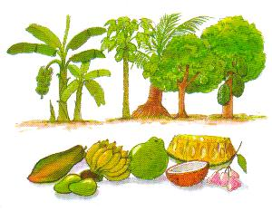
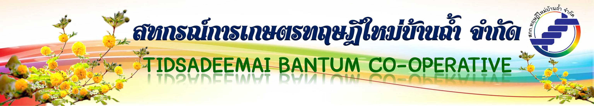

หลักการและแนวทางสำคัญในการดำเนินงานเกษตรตามแนว "ทฤษฎีใหม่" ที่ควรทราบมีดังนี้
- เป็นระบบการผลิตแบบเศรษฐกิจพอเพียง ที่เกษตรกรสามารถเลี้ยงตัวเองได้ในระดับที่ประหยัดก่อน
- ต้องมีพื้นที่ส่วนหนึ่งทำนาข้าว เพราะข้าวเป็นปัจจัยหลักที่ทุกครัวเรือนต้องปลูก เพื่อให้มีข้าวพอบริโภคตลอดทั้งปี
- ต้องมีน้ำสำรองไว้ใช้เพียงพอตลอดปี เพื่อการเพาะปลูกในระยะฝนทิ้งช่วง หรือในฤดูแล้ง
- ใช้อัตราส่วน30 : 30 : 30 : 10 ในการแบ่งพื้นที่ออกเป็น 4 ส่วน ไม่ว่าจะมีพื้นที่ถ์อครองน้อยกว่าหรือมากกว่า 15 ไร่ คือ
30 % ใช้ขุดสระเก็บกักน้ำ
30 % ใช้ปลูกข้าว
30 % ใช้ปลูกพืชผัก ผลไม้ พืชไร่ ไม้ยืนต้น
10 % ใช้เป็นที่อยู่อาศัยและอื่นๆ



สหกรณ์การเกษตรทฤษฎีใหม่บ้านถ้ำ จำกัด
http://www.sahakornthai.com/tsdbanthum/